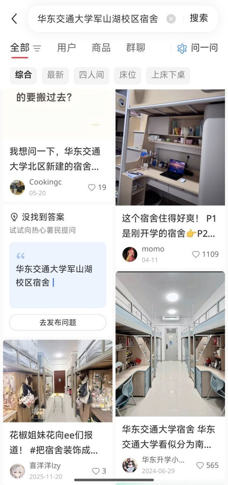
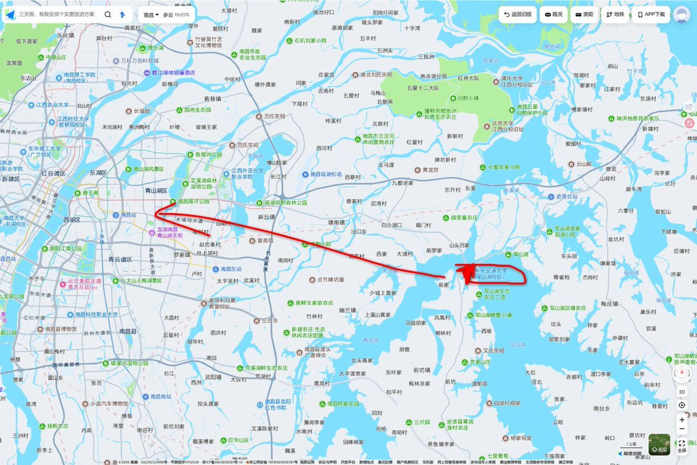
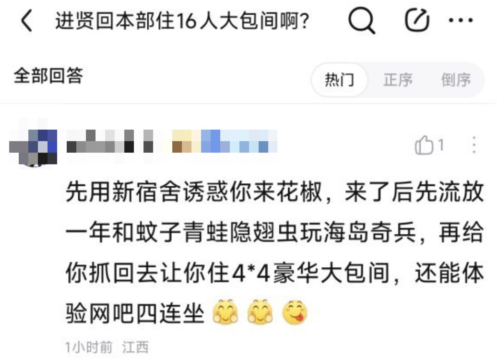
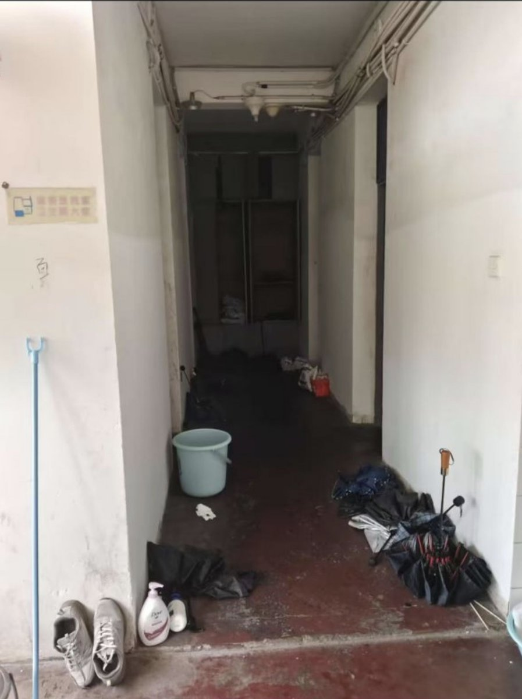

沐桃
@xiey57828
@whyyoutouzhele 该不会是把本部的发了吧😱军山湖校区是乡下，狗都不去




李老师不是你老师
@whyyoutouzhele
网友投稿：“华东交通大学军山湖校区（进贤校区），宿舍招生图和实物图，堪比卖家秀卖家秀”
李老师我们只能求求你们了，让大家看到大学不比高中压榨学生，他们的手段很老辣。
华东交通大学军山湖校区（也叫进贤校区），在进贤县的一个乡里面，平时里南昌市区很远。 https://t.co/6jT64fHFhX